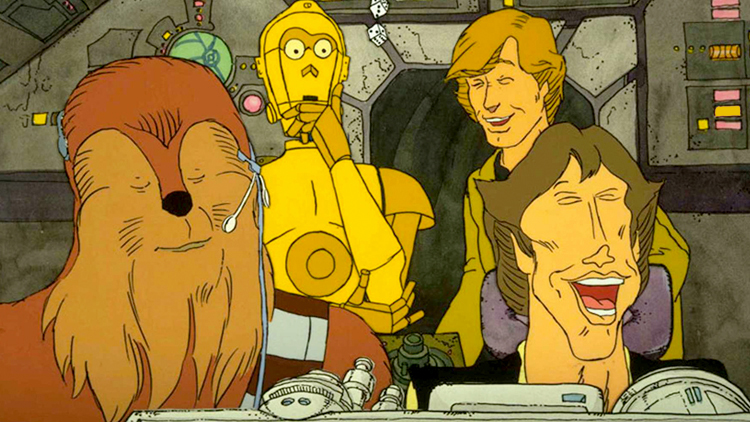

I Have A Bad Feeling About This
The Star Wars Holiday Special is a television variety show that aired on CBS on 17 November 1978. On the surface, it tells the story of Chewbacca’s journey back home in order to celebrate a holiday called Life Day; while waiting for him to arrive, his family entertains themselves in a number of ways.
However, the premise isn’t what makes the Star Wars Holiday Special so notably infamous amongst fans.
What Makes a Star Wars Story?
With so much content spanning so many different mediums, it may feel as if Star Wars always had a distinct look, feel, and sound. However, when the franchise was still in its infancy, there was an unmistakable lack of overall direction, lore, and vision.
The Star Wars Holiday Special is a prime example of this. As result, it has gained a certain cult status over the years for its campy inconsistencies and for being so universally maligned by critics.
The comparatively low budget to the sprawling space opera’s films and the variety show format certainly doesn’t help the Special feel like it belongs in the Star Wars universe. Some of the segments include:
- Chewbacca’s father watching a sensual virtual reality video in the family sitting room, starring singer Diahann Carroll.
- Golden Girls actress Bea Arthur playing a cantankerous cantina bartender.
- American rock band, Jefferson Starship, performing in a hologram music video.
- The Carol Burnett Show’s Harvey Korman playing a crossdressing cooking show host.
To say that the Star Wars Holiday Special is a rocky first foray into what the Star Wars universe might look like outside of the feature films is an understatement; therefore, we whole-heartedly endorse it as essential viewing.